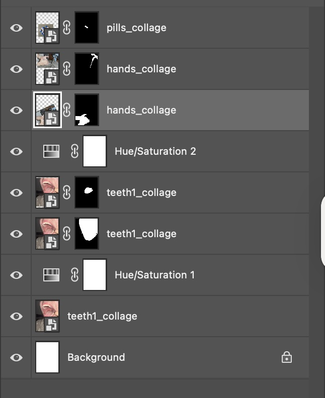

In this collage, “Rinse and Repeat,” I intend to portray the cycle of addiction. I chose the main background image of an open mouth to symbolize consumption and vulnerability. I then used the sink and the washing of hands to represent the “rinsing effect,” the self-acknowledgment that the behavior is bad but continuing to do it anyways. And of course, the pill as an obvious reference to make the meaning clearer. I used masking to isolate the images and blending to emphasize the tongue and the pill, and to mute the hands being washed a bit. Through my intended symbolism I hope that this could apply to any sort of addiction that the viewer could relate to, be it a physical dependence or behavioral. Addictions of all kinds are a major societal issue and many are embarassed or too far in it to get help. I think it is important to acknowledge its existence and discuss the complex emotions it brings up. The photos I used are all from wikimedia commons.
Back to Home